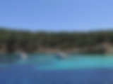
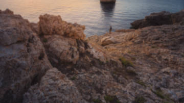
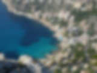
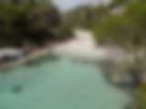
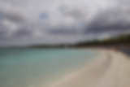
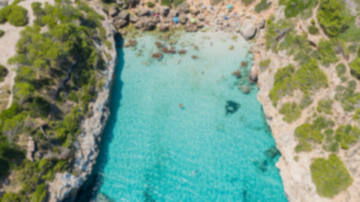
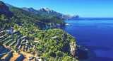
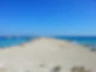
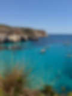

Routes · Mallorca · Balearics
Where Limitless takes you
Every route is shaped around your group — the destinations below are a starting point, not a fixed menu. Half-day swims in the nearest bays, full days down the coast, or multi-day crossings to the neighbouring islands: tell the crew your dates and what you're after, and you'll get a realistic plan for your trip.
Captain and crew usually reply within the hour, and always within 24 hours. Crew and VAT included. Gratuity is never expected.
Close to Palma — half-day coves
The sheltered, turquoise bays of the southwest, all within an easy morning: Portals Vells and its sea caves, the Illes Malgrats marine reserve off El Toro, and the deep, calm blue of Cala Llamp.
Down the coast — full days
Longer, settled-weather runs to Mallorca's finest beaches and reserves: Sa Dragonera's island wilderness, the dramatic inlet of Cala Pi, the Caribbean sand of Es Trenc, the protected archipelago of Cabrera, and the photographed coves of the southeast.
Beyond Mallorca — multi-day
Sleep aboard and reach further: the mountainous northwest coast, a full circumnavigation of the island, and crossings to Ibiza and Formentera or quiet Menorca.
Half-day

Portals VellsThe easy first bay — clear water and cool sea caves, barely half an hour from the marina.
El Toro & Illes MalgratsTwo protected islets and the best snorkelling within easy reach of Palma.
Cala LlampDeep blue water under the cliffs near Port d'Andratx, away from the crowds.
Full day
- Sa Dragonera & Sant ElmAn uninhabited island reserve at the western tip of Mallorca, all cliffs and clear channels.

Cala PiA dramatic sliver of a cove cut deep into the southern cliffs.
Es TrencThe island's most famous stretch of wild, white sand and unreal turquoise water.- Cabrera National ParkMallorca's protected archipelago — a marine national park most people never reach.

Caló des Moro & Cala FigueraThe most photographed cove in Mallorca — and far better from the water than the queue on the cliff.
Multi-day
- West Coast — Sa Foradada, Port de Sóller & Cala TuentThe wild Tramuntana side of the island — cliffs, mountain villages and deep, cold-blue water.

Mallorca CircumnavigationThe complete island, coast to coast, at your own pace over several days.
Ibiza & FormenteraCross to the Pityusic islands — Ibiza's energy and Formentera's Caribbean sandbanks.
Menorca CrossingThe quiet Balearic — untouched coves and one of the world's great natural harbours.
Message the captain and crew with your dates — they'll suggest the route that fits.